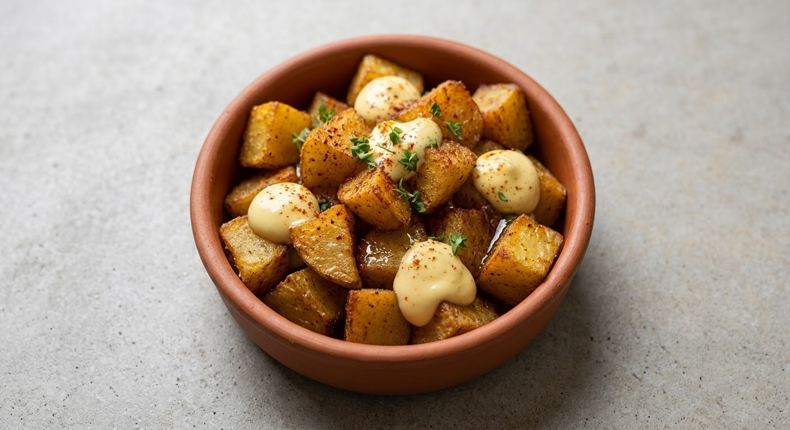
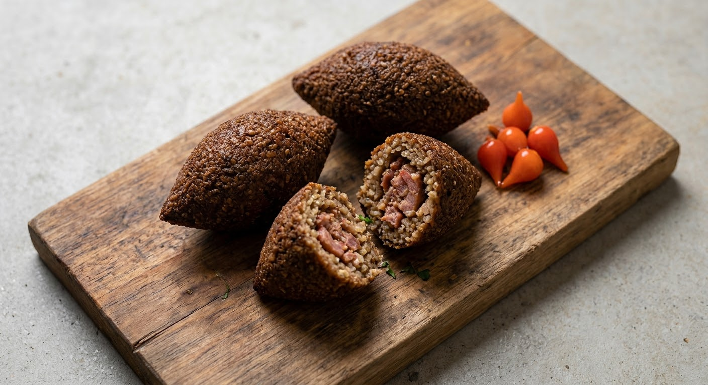
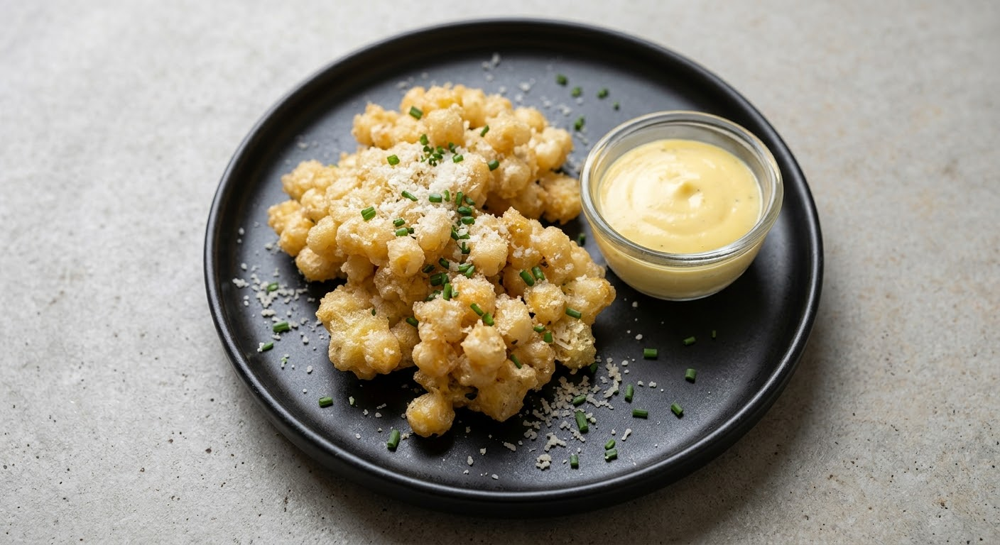
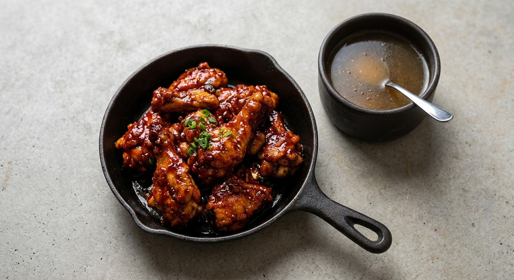
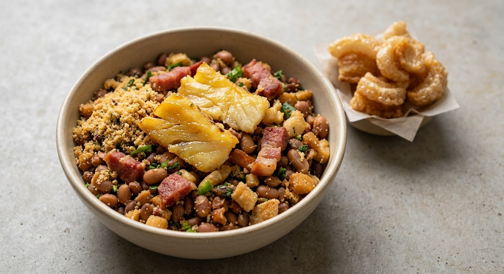
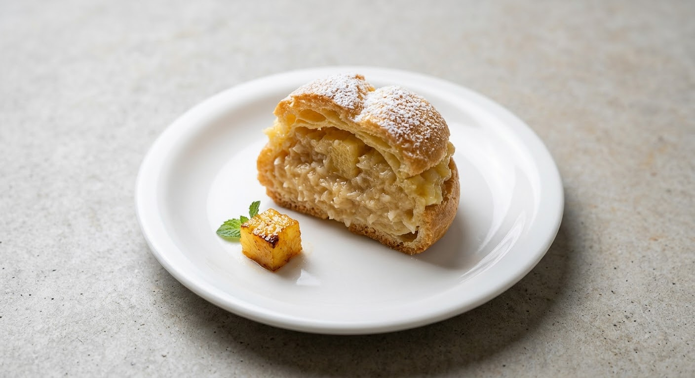

Minas encontra o mundo
Em 1987, numa cozinha em Contagem, dona Raimunda recebeu a visita de um primo marinheiro que chegou com a mala cheia de temperos do mundo: curry, pimenta defumada, gergelim, azeite português.
Ela ajeitou o avental e falou: "Mineiro não tem medo de panela. Deixa comigo."
Naquela noite, o feijão tropeiro ganhou curry, o pão de queijo ganhou chimichurri e a couve encontrou o gergelim. O primo provou e disse: "Dei a volta ao mundo e nunca comi nada igual."
Assim nasceu o Mr: Minas + Raízes, ou Minas + Mundo, depende de quem pergunta. Hoje, o fogão a lenha encontra o mundo inteiro em pratos como a carne de sol com queijo minas, o bibimbap com torresmo e a moqueca mineira com quiabo.
Como dizia dona Raimunda:
"O mundo é grande demais, mas cabe inteirinho numa panela de ferro."
Cardápio
Entradas
Batatas bravas do serrado

Batatas douradas e apimentadas, no estilo espanhol, servidas com um aioli cremoso de pequi, feito com óleo do fruto de Montes Claros, e finalizadas com manteiga de garrafa. É a Espanha encontrando o sertão mineiro.
Quibe da fazenda

Quibe dourado por fora e macio por dentro, recheado com linguiça artesanal mineira de sabor defumado. É o Líbano chegando de mala e cuia às Gerais.
Tempurá de milho

Milho verde envolvido em uma massa leve de tempurá, frito até ficar dourado e crocante, e servido com molho bearnaise e queijo Grana ralado na hora. É o Japão descobrindo o gosto do milho da roça.
Pratos principais
Frango coreano de Minas

Frango suculento, envolvido em um molho gochujang de sabor intenso e levemente picante, acompanhado de um caldo de tutano profundo e aveludado. É a Coreia do Sul encontrando o frango caipira.
Tropeiro do mar

Feijão-tropeiro com farofa crocante, linguiça e lascas de bacalhau dourado, como pedem as mesas portuguesas. É Portugal atravessando o oceano para se sentar à mesa dos tropeiros.
Sobremesa
Abacaxi com coco em choux

Massa choux leve e dourada, com recheio cremoso de abacaxi e coco, inspirada no bolo clássico das casas mineiras. É a confeitaria francesa se rendendo ao doce da vovó.
Reservas
Garanta sua mesa no Mr.